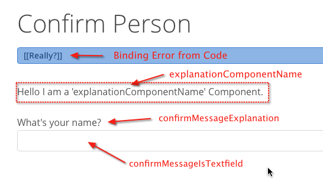

<!DOCTYPE HTML>
<html>
	<head>
		<meta http-equiv="Content-Type" content="text/html; charset=utf-8">
        <title>Helper File for RuleModeler</title>
    </head>
	<body>
        <section>
            
            <article>
                <header><h2>explanationComponentName</h2></header>
                <body>
<p>This is used in the Confirmpage.</p>
<p><strong>General</strong></p>
<p>There are 2 Patterns for that the Confirmpage can get used, 1 is from your code or also from Binding only</p>
<p>For using with Binding the Confirmpage has to be component Bind with 'dataSource' or 'object'</p>       
<pre>
Sample :
	100 : *true* => explanationComponentName = "SampleComponent" [com.webobjects.directtoweb.Assignment]
	
	
	
	'explanationComponentName' is a Componentname that will display for Confirmation.
	
	your Component should have following accessors
	
	> public EOEnterpriseObject object
	> public EODataSource dataSource
	> public String pageConfiguration = null;
	> public NSDictionary<String, String> settings = null;
</pre>              
	                
                </body>
            </article>
        </section>
        <footer><p>Last Modified on 2013/12/18 by Ken</p></footer>
    </body>
</html>